Redis 中有五种常用数据结构，它们都有对应的操作命令：

1. 字符串
Redis 中 STRINGs 用来存储三种类型：
- 字符串
- 整数
- 浮点数
整数和浮点数可增减。整数范围为平台的长整型范围(如，64位系统中为有符号的64位整型)；浮点数采用 IEEE 754 双精度浮点数。
增减命令
| 命令 | 示例及说明 |
|---|---|
| INCR | INCR key-name 将当前 key 对应的值加 1 |
| DECR | DECR key-name 将当前 key 对应的值减 1 |
| INCRBY | INCRBY key-name amount 将当前 key 对应的值加上指定的整数值 |
| DECRBY | DECRBY key-name amount 将当前 key 对应的值减去指定的整数值 |
| INCRBYFLOAT | INCRBYFLOAT key-name amount 将当前 key 对应的值加上指定的浮点值 |
如果尝试在空字符串或不存在的 key 上调用 INCR* 或 DECR* ，当前 key 值会被当作 0 来处理：
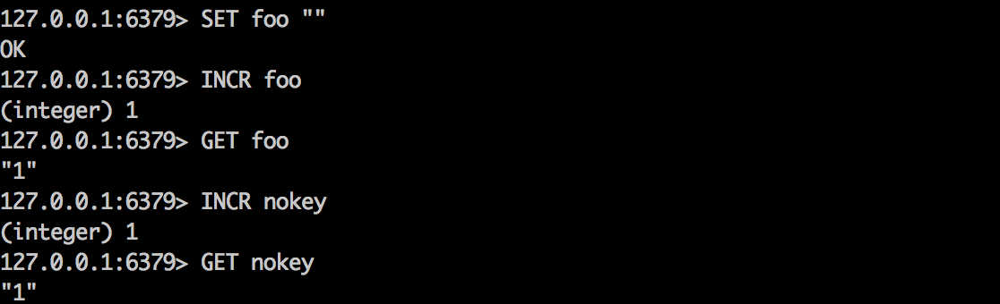
如果尝试在非整数或浮点数上调用 INCR* 或 DECR* ，会抛出 error ：
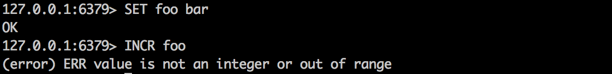
操纵字符串命令
| 命令 | 示例及说明 |
|---|---|
| APPEND | APPEND key-name value 拼接字符串 value 至指定 key 值 |
| GETRANGE | GETRANGE key-name start end 截取从 start 到 end 的子串(闭区间) |
| SETRANGE | SETRANGE key-name offset value 从 offset 开始添加 value 子串 |
| GETBIT | GETBIT key-name offset 获取 offset 处的 bit 值 |
| SETBIT | SETBIT key-name offset value 设置 offset 处的 bit 值 |
| BITCOUNT | BITCOUNT key-name [start end] 计算 string 占了多少位 |
| BITOP | BITOP operation dest-key key-name [key-name ...] 位运算，结果存入 dest-key 中。 operation 包括 AND, OR, XOR, NOT |
使用示例：
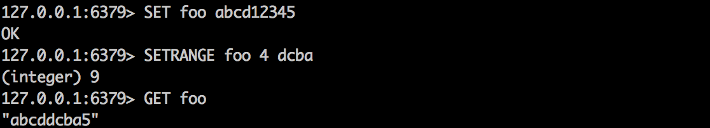
2. 列表
LISTs 中存储有序的 STRING 序列。
基本命令
| 命令 | 示例及说明 |
|---|---|
| RPUSH | RPUSH key-name value [value...] 向 list 尾部(右)添加值 |
| LPUSH | LPUSH key-name value [value...] 向 list 首部(左)添加值 |
| RPOP | RPOP key-name 移除并返回最右侧的值 |
| LPOP | LPOP key-name 移除并返回最左侧的值 |
| LINDEX | LINDEX key-name offset 返回指定 offset 处的值 |
| LRANGE | LRANGE key-name start end 返回从 start 到 end 处的值(闭区间) |
| LTRIM | LTRIM key-name start end 截取 list ，只保留从 start 到 end 的值 |
Blocking操作
| 命令 | 示例及说明 |
|---|---|
| BLPOP | BLPOP key-name [key-name ...] timeout 返回第一个非空列表中最左侧的值，或一直等待 timeout 秒。 |
| BRPOP | BRPOP key-name [key-name ...] timeout 返回第一个非空列表中最右侧的值，或一直等待 timeout 秒。 |
| RPOPLPUSH | RPOPLPUSH source-key dest-key 将 source 中最右侧的值放入 dest 的左侧，并返回该值。 |
| BRPOPLPUSH | BRPOPLPUSH source-key dest-key timeout 将 source 中最右侧的值放入 dest 的左侧，并返回该值。如果 source 为空，一直等待 timeout 秒。 |
以上命令在操作消息队列或任务队列时非常常用。使用示例：
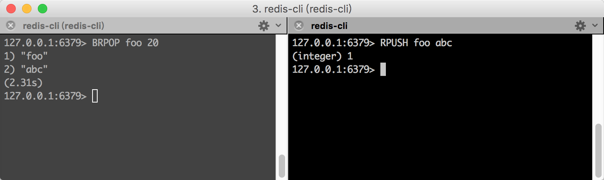
当右侧的终端执行命令后，左侧输出上图结果，否则会一直等待 20 秒超时并返回 nil 。
3. 集合
SETs 用来保存唯一、无序的项。
基本命令
| 命令 | 示例及说明 |
|---|---|
| SADD | SADD key-name item [item ...] 添加条目并返回实际加入的数量 |
| SREM | SREM key-name item [item ...] 删除条目并返回删除的数量 |
| SISMEMBER | SISMEMBER key-name item 检测某条目是否在 set 中(0否1是) |
| SCARD | SCARD key-name 返回 set 中条目的总数 |
| SMEMBERS | SMEMBERS key-name 返回所有条目 |
| SRANDMEMBER | SRANDMEMBER key-name [count] 随机返回1个或多个条目 |
| SPOP | SPOP key-name 随机删除并返回一个条目 |
| SMOVE | SMOVE source-key dest-key item 如果条目存在，将其从 source 移至 dest |
拼接、操纵命令
| 命令 | 示例及说明 |
|---|---|
| SDIFF | SDIFF key-name [key-name ...] 返回第一个 set 中的条目，该条目不在任何其它的 set 中 |
| SDIFFSTORE | SDIFFSTORE dest-key key-name [key-name ...] 同上条命令，但将结果保存在 dest-key 中 |
| SINTER | SINTER key-name [key-name ...] 返回指定 set 中条目的交集 |
| SINTERSTORE | SINTERSTORE dest-key key-name [key-name ...] 返回指定 set 中条目的交集并保存在 dest-key 中 |
| SUNION | SUNION key-name [key-name ...] 返回指定 set 中条目的并集 |
| SUNIONSTORE | SUNIONSTORE dest-key key-name [key-name ...] 返回指定 set 中条目的并集并保存在 dest-key 中 |
使用示例：
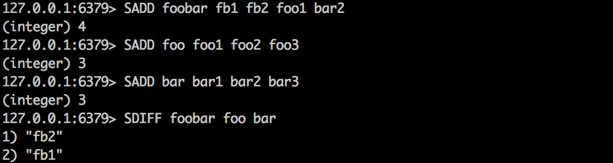
4. 哈希
HASHes 用来存储一组键值对。
增加、删除命令
| 命令 | 示例及说明 |
|---|---|
| HMGET | HMGET key-name key [key ...] 获取指定 key 下的值 |
| HMSET | HMSET key-name key value [key value ...] 给指定 key 设置值 |
| HDEL | HDEL key-name key [key ...] 删除指定键值对 |
| HLEN | HLEN key-name 获取键值对的总数 |
使用示例：
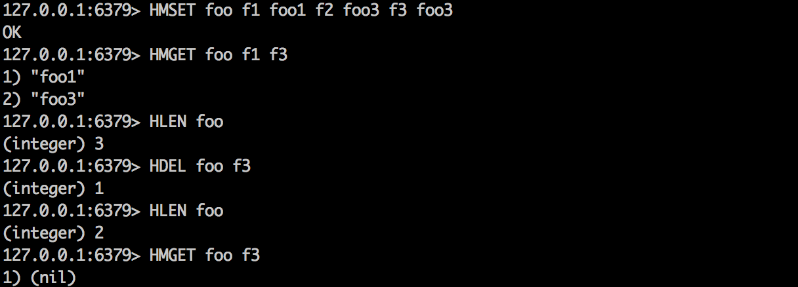
批量操作
| 命令 | 示例及说明 |
|---|---|
| HEXISTS | HEXISTS key-name key 检测 key 是否存在 |
| HKEYS | HKEYS key-name 获取所有的 key |
| HVALS | HVALS key-name 获取所有的 value |
| HGETALL | HGETALL key-name 获取所有的 key-value |
| HINCRBY | HINCRBY key-name key increment 指定 key 对应的值增加整数 increment 值 |
| HINCRBYFLOAT | HINCRBYFLOAT key-name key increment 指定 key 对应的值增加浮点数 increment 值 |
5. 有序集合
ZSET 存储一组成员条目到其得分的映射。成员或得分均可以作为获取或扫描条件。
基本命令
| 命令 | 示例及说明 |
|---|---|
| ZADD | ZADD key-name score member [score member ...] 增加指定了分数的成员 |
| ZREM | ZREM key-name member [member ...] 删除成员并返回删除的条数 |
| ZCARD | ZCARD key-name 返回成员总数 |
| ZINCRBY | ZINCRBY key-name increment member 增加指定成员的得分值 |
| ZCOUNT | ZCOUNT key-name min max 获取 min 到 max 得分范围的成员数量 |
| ZRANK | ZRANK key-name member 获取成员所在的下标索引 |
| ZSCORE | ZSCORE key-name member 获取指定成员的得分 |
| ZRANGE | ZRANGE key-name start stop [WITHSCORES] 获取 start 至 stop 间的成员(可选地获取对应得分) |
获取、删除指定范围数据
| 命令 | 示例及说明 |
|---|---|
| ZREVRANK | ZREVRANK key-name member 对应 ZRANK 命令，返回成员的反序索引 |
| ZREVRANGE | ZREVRANGE key-name start stop [WITHSCORES] 对应 ZRANGE，反序 |
| ZRANGEBYSCORE | ZRANGEBYSCORE key min max [WITHSCORES] [LIMIT offset count] 根据得分范围获取成员 |
| ZREVRANGEBYSCORE | ZREVRANGEBYSCOREkey max min [WITHSCORES] [LIMIT offset count] ZRANGEBYSCORE命令的反序结果 |
| ZREMRANGEBYRANK | ZREMRANGEBYRANK key-name start stop 删除指定下标范围的成员 |
| ZREMRANGEBYSCORE | ZREMRANGEBYSCORE key-name min max 删除指定得分范围的成员 |
| ZINTERSTORE | ZINTERSTORE dest-key numkeys key [key ...] [WEIGHTS weight [weight...]] [AGGREGATE (SUM or MIN or MAX)] ZSET上的交集操作 |
| ZUNIONSTORE | ZUNIONSTORE dest-key numkeys key [key ...] [WEIGHTS weight [weight...]] [AGGREGATE (SUM or MIN or MAX)] ZSET上的并集操作 |
其中，ZINTERSTORE 和 ZUNIONSTORE 的参数 numkeys 表示后面将跟多少个集合作为入参。某些客户端实现(如python)可能省略该参数，因为它可以在函数内计算该值。
ZINTERSTORE 使用示例：
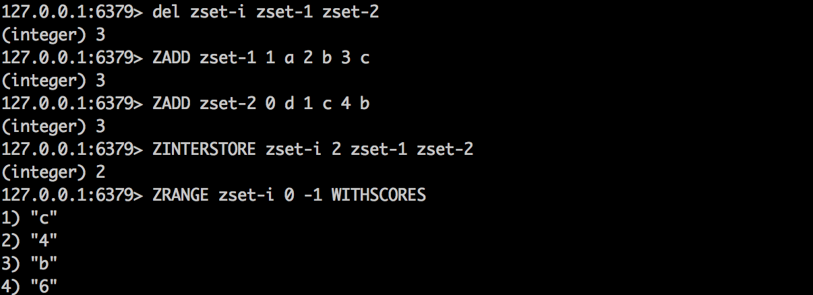
其执行过程如下：
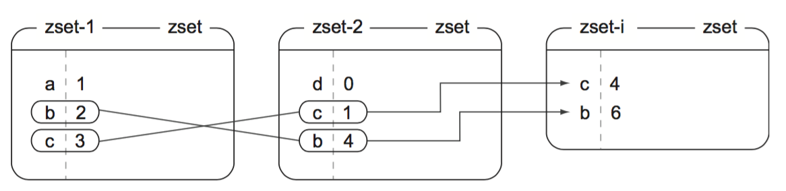
ZUNIONSTORE 使用示例：
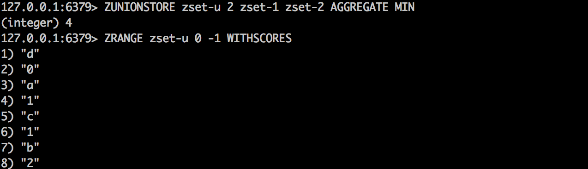
其执行过程如下：
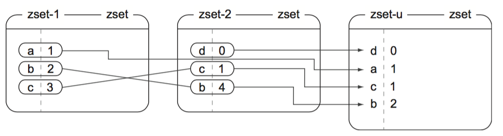
ZSET 和 SET 取交集示例：
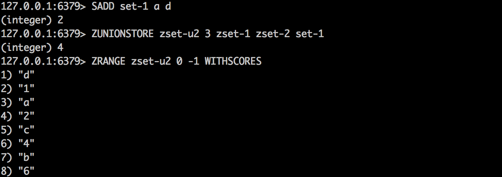
其执行过程如下：
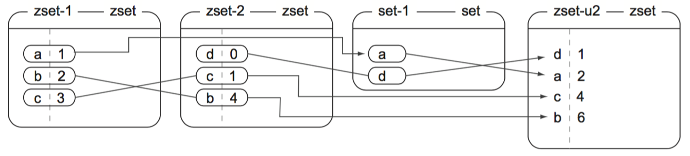
6. 发布/订阅
Redis 中实现了发布/订阅模式。
基本命令
| 命令 | 示例及说明 |
|---|---|
| SUBSCRIBE | SUBSCRIBE channel [channel ...] 订阅指定的通道 |
| UNSUBSCRIBE | UNSUBSCRIBE [channel [channel ...]] 取消订阅 |
| PUBLISH | PUBLISH channel message 发布消息 |
| PSUBSCRIBE | PSUBSCRIBE pattern [pattern ...] 订阅指定匹配模式的通道 |
| PUNSUBSCRIBE | PUNSUBSCRIBE [pattern [pattern ...]] 取消订阅匹配模式的通道 |
应减少使用 Redis 提供的此模式，存在两个问题：
- 订阅者读消息的速度较慢，会导致 Redis 保存着大量的缓冲，继而导致其性能下降；
- 订阅者断开连接至重连成功之间发送的消息将会丢失。
一个小例子：
var redis = require('redis');var lilei = redis.createClient();var hanmeimei = redis.createClient();var count = 0;lilei.on('subscribe', function (channel) {hanmeimei.publish('classroom', 'My name is Hanmeimei.');hanmeimei.publish('classroom', 'What\'s your name?');});lilei.on('message', function (channel, message) {console.log(message);count += 1;if (count === 2) {console.log('I am Lilei.');lilei.unsubscribe();lilei.end();hanmeimei.end();}});lilei.subscribe('classroom'); // channel
输出结果：
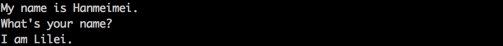
7. 排序
SORT 用来给 list, set(或 zset) 排序。例如：
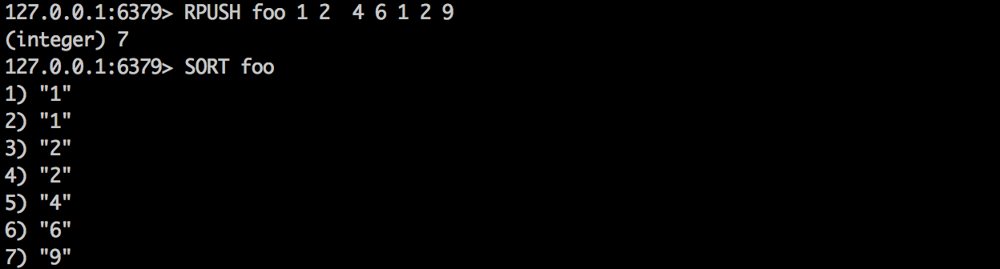
完整的定义为：
SORT key [BY pattern] [LIMIT offset count] [GET pattern [GET pattern ...]] [ASC|DESC] [ALPHA] [STORE destination]
其中：
DESC用来倒序排列ALPHA用来进行字符串排序LIMIT用来限制返回结果数
SORT 还可以实现类似关系数据库的外键查询，或跳过某元素等等更高级的功能。例如：
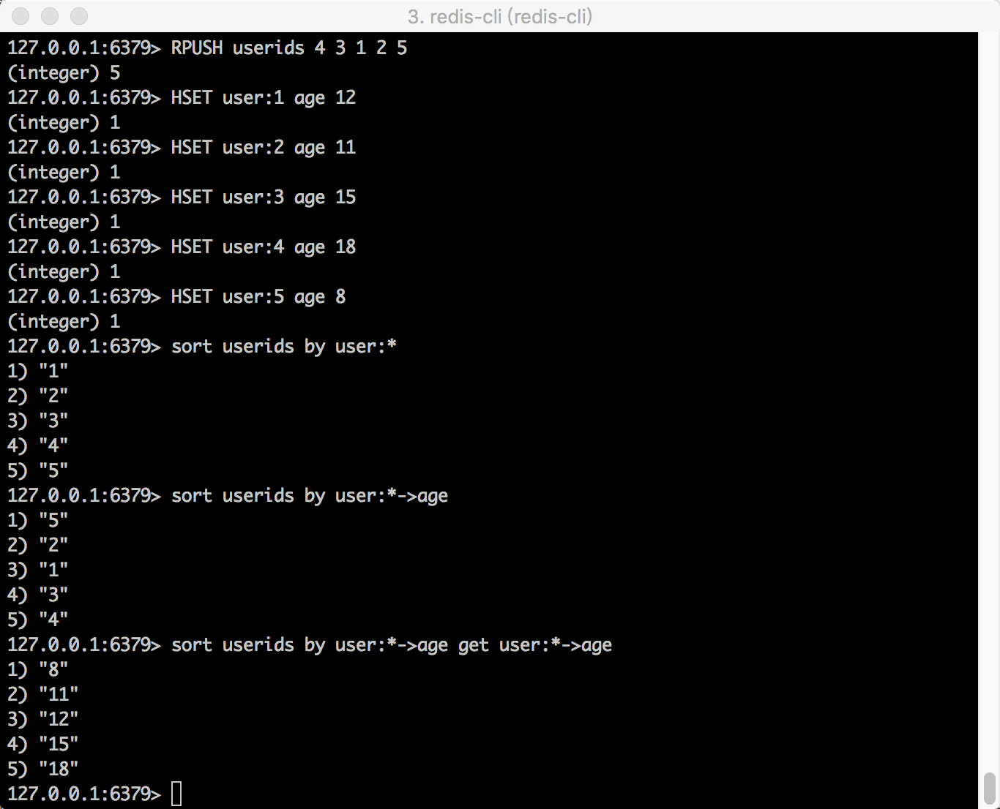
@ssbunny 2015-12-03